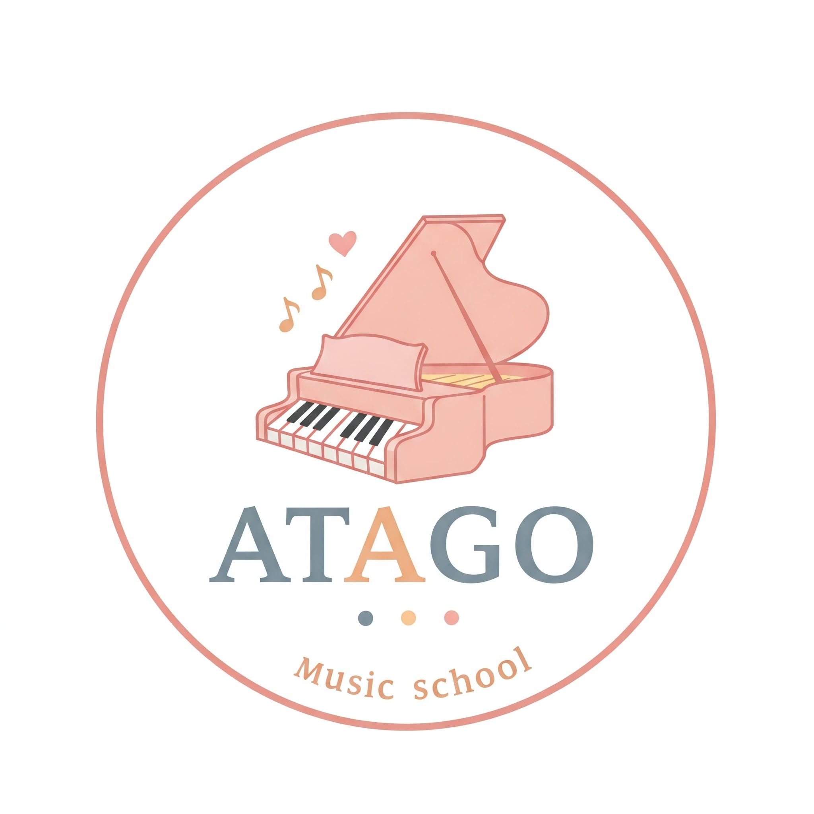

教室の理念
音楽を通じて、心豊かな人生を育むお手伝いをします。一人ひとりの個性と目標に寄り添ったオーダーメイドレッスンを提供します。
講師：田中 太郎
音楽大学卒業。国内外のコンクール受賞歴あり。初心者から専門家まで指導経験豊富です。
レッスン内容・料金
入会金：5,000円（税込）
| コース | 時間 | 月謝 |
|---|---|---|
| ピアノ（30分） | 年40回 | 7,500円 |
| ピアノ（45分） | 年40回 | 9,500円 |
無料体験レッスン受付中
まずはお気軽にお問い合わせください。
Googleフォームで申し込む
音楽を通じて、心豊かな人生を育むお手伝いをします。一人ひとりの個性と目標に寄り添ったオーダーメイドレッスンを提供します。
音楽大学卒業。国内外のコンクール受賞歴あり。初心者から専門家まで指導経験豊富です。
入会金：5,000円（税込）
| コース | 時間 | 月謝 |
|---|---|---|
| ピアノ（30分） | 年40回 | 7,500円 |
| ピアノ（45分） | 年40回 | 9,500円 |
まずはお気軽にお問い合わせください。
Googleフォームで申し込む